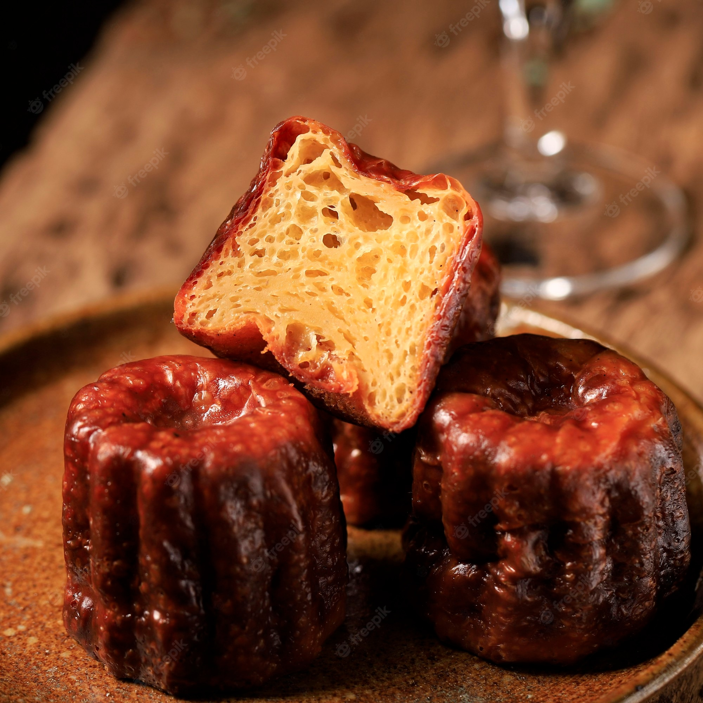

Canele
A Canele is a small French pastry based on vanilla beans, milk eggs and rum.
They're challenging to make, but totally worth it!
If you have patience, the result will be a small pastry with a caramelized crust and
soft and custard interior.
Are you ready?

Canele Ingredients
- 475g whole milk
- 45g butter
- 200g sugar
- 85g whole eggs
- 35g egg yolk
- 100g all-purpose flour
- 20g rum
- 1 vanilla bean - Note.: you can use vanilla extract as well.
- a pinch of salt
Step by Step
- Day 1:
- Add the milk and the butter in a sauce pan and heat it
until almost boiled. Transfer to a bowl and add the seeds from the vanilla bean, mixing
all together. Let this cool for a while.
- In a large bowl, mix the flour, sugar and salt.
Add the eggs and egg yolks. Mix it very well, but be careful to do not incorporate
to much air in the mixing. Finally add the rum and mix a little more.
- Place it in the fridge for 48h.
- Day 2:
- Greased de canele mold with melted butter than cool it in the fridge;
- Preheat the oven to 230°c for 30 min.
- Remove the canele mix from the fridge and whisk the batter to form a
homogeneous mixture.
- Transfer the batter to each canele mold, leaving about 1cm from the top
- Bake for 15min at 230°c, than bake for more 50min at 180°c.
- When Finished, let it cool.
- Once cool down, it's Canele time! Enjoy!